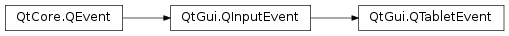

QTabletEvent¶
Synopsis¶
Functions¶
- def
button() - def
buttons() - def
device() - def
globalPos() - def
globalPosF() - def
globalX() - def
globalY() - def
hiResGlobalX() - def
hiResGlobalY() - def
pointerType() - def
pos() - def
posF() - def
pressure() - def
rotation() - def
tangentialPressure() - def
uniqueId() - def
x() - def
xTilt() - def
y() - def
yTilt() - def
z()
Detailed Description¶
The
PySide2.QtGui.QTabletEventclass contains parameters that describe a Tablet event.Tablet events are generated from tablet peripherals such as Wacom tablets and various other brands, and electromagnetic stylus devices included with some types of tablet computers. (It is not the same as
PySide2.QtGui.QTouchEventwhich a touchscreen generates, even when a passive stylus is used on a touchscreen.)Tablet events are similar to mouse events; for example, the
PySide2.QtGui.QTabletEvent.x(),PySide2.QtGui.QTabletEvent.y(),PySide2.QtGui.QTabletEvent.pos(),PySide2.QtGui.QTabletEvent.globalX(),PySide2.QtGui.QTabletEvent.globalY(), andPySide2.QtGui.QTabletEvent.globalPos()accessors provide the cursor position, and you can see whichPySide2.QtGui.QTabletEvent.buttons()are pressed (pressing the stylus tip against the tablet surface is equivalent to a left mouse button). But tablet events also pass through some extra information that the tablet device driver provides; for example, you might want to do subpixel rendering with higher resolution coordinates (PySide2.QtGui.QTabletEvent.hiResGlobalX()andPySide2.QtGui.QTabletEvent.hiResGlobalY()), adjust color brightness based on thePySide2.QtGui.QTabletEvent.pressure()of the tool against the tablet surface, use different brushes depending on the type of tool in use (PySide2.QtGui.QTabletEvent.device()), modulate the brush shape in some way according to the X-axis and Y-axis tilt of the tool with respect to the tablet surface (PySide2.QtGui.QTabletEvent.xTilt()andPySide2.QtGui.QTabletEvent.yTilt()), and use a virtual eraser instead of a brush if the user switches to the other end of a double-ended stylus (PySide2.QtGui.QTabletEvent.pointerType()).Every event contains an accept flag that indicates whether the receiver wants the event. You should call
QTabletEvent.accept()if you handle the tablet event; otherwise it will be sent to the parent widget. The exception areTabletEnterProximityandTabletLeaveProximityevents: these are only sent toPySide2.QtWidgets.QApplicationand do not check whether or not they are accepted.The
QWidget.setEnabled()function can be used to enable or disable mouse, tablet and keyboard events for a widget.The event handler
QWidget.tabletEvent()receivesTabletPress,TabletReleaseandTabletMoveevents. Qt will first send a tablet event, then if it is not accepted by any widget, it will send a mouse event. This allows users of applications that are not designed for tablets to use a tablet like a mouse. However high-resolution drawing applications should handle the tablet events, because they can occur at a higher frequency, which is a benefit for smooth and accurate drawing. If the tablet events are rejected, the synthetic mouse events may be compressed for efficiency.New in Qt 5.4:
PySide2.QtGui.QTabletEventincludes all information available from the device, includingQTabletEvent.buttons(). Previously it was not possible to accept all tablet events and also know which stylus buttons were pressed.Note that pressing the stylus button while the stylus hovers over the tablet will generate a button press on some types of tablets, while on other types it will be necessary to press the stylus against the tablet surface in order to register the simultaneous stylus button press.
Notes for X11 Users¶
If the tablet is configured in xorg.conf to use the Wacom driver, there will be separate XInput “devices” for the stylus, eraser, and (optionally) cursor and touchpad. Qt recognizes these by their names. Otherwise, if the tablet is configured to use the evdev driver, there will be only one device and applications may not be able to distinguish the stylus from the eraser.
Notes for Windows Users¶
Tablet support currently requires the WACOM windows driver providing the DLLwintab32.dllto be installed. It is contained in older packages, for examplepentablet_5.3.5-3.exe.
-
class
PySide2.QtGui.QTabletEvent(t, pos, globalPos, device, pointerType, pressure, xTilt, yTilt, tangentialPressure, rotation, z, keyState, uniqueID)¶ -
class
PySide2.QtGui.QTabletEvent(t, pos, globalPos, device, pointerType, pressure, xTilt, yTilt, tangentialPressure, rotation, z, keyState, uniqueID, button, buttons) Parameters: - device –
PySide2.QtCore.int - globalPos –
PySide2.QtCore.QPointF - yTilt –
PySide2.QtCore.int - tangentialPressure –
PySide2.QtCore.qreal - keyState –
PySide2.QtCore.Qt.KeyboardModifiers - xTilt –
PySide2.QtCore.int - rotation –
PySide2.QtCore.qreal - t –
PySide2.QtCore.QEvent.Type - pos –
PySide2.QtCore.QPointF - uniqueID –
PySide2.QtCore.qint64 - button –
PySide2.QtCore.Qt.MouseButton - buttons –
PySide2.QtCore.Qt.MouseButtons - pointerType –
PySide2.QtCore.int - pressure –
PySide2.QtCore.qreal - z –
PySide2.QtCore.int
Construct a tablet event of the given
type.The
posparameter indicates where the event occurred in the widget;globalPosis the corresponding position in absolute coordinates.pressurecontains the pressure exerted on thedevice.pointerTypedescribes the type of pen that is being used.xTiltandyTiltcontain the device’s degree of tilt from the x and y axes respectively.keyStatespecifies which keyboard modifiers are pressed (e.g., Ctrl).The
uniqueIDparameter contains the unique ID for the current device.The
zparameter contains the coordinate of the device on the tablet, this is usually given by a wheel on 4D mouse. If the device does not support a Z-axis, pass zero here.The
tangentialPressureparameter contins the tangential pressure of an air brush. If the device does not support tangential pressure, pass 0 here.rotationcontains the device’s rotation in degrees. 4D mice support rotation. If the device does not support rotation, pass 0 here.See also
PySide2.QtGui.QTabletEvent.pos()PySide2.QtGui.QTabletEvent.globalPos()PySide2.QtGui.QTabletEvent.device()PySide2.QtGui.QTabletEvent.pressure()PySide2.QtGui.QTabletEvent.xTilt()PySide2.QtGui.QTabletEvent.yTilt()PySide2.QtGui.QTabletEvent.uniqueId()PySide2.QtGui.QTabletEvent.rotation()PySide2.QtGui.QTabletEvent.tangentialPressure()PySide2.QtGui.QTabletEvent.z()Construct a tablet event of the given
type.The
posparameter indicates where the event occurred in the widget;globalPosis the corresponding position in absolute coordinates.pressurecontains the pressure exerted on thedevice.pointerTypedescribes the type of pen that is being used.xTiltandyTiltcontain the device’s degree of tilt from the x and y axes respectively.keyStatespecifies which keyboard modifiers are pressed (e.g., Ctrl).The
uniqueIDparameter contains the unique ID for the current device.The
zparameter contains the coordinate of the device on the tablet, this is usually given by a wheel on 4D mouse. If the device does not support a Z-axis, pass zero here.The
tangentialPressureparameter contins the tangential pressure of an air brush. If the device does not support tangential pressure, pass 0 here.rotationcontains the device’s rotation in degrees. 4D mice, the Wacom Art Pen, and the Apple Pencil support rotation. If the device does not support rotation, pass 0 here.The
buttonthat caused the event is given as a value from theQt.MouseButtonenum. If the eventtypeis notTabletPressorTabletRelease, the appropriate button for this event isQt.NoButton.buttonsis the state of all buttons at the time of the event.See also
PySide2.QtGui.QTabletEvent.pos()PySide2.QtGui.QTabletEvent.globalPos()PySide2.QtGui.QTabletEvent.device()PySide2.QtGui.QTabletEvent.pressure()PySide2.QtGui.QTabletEvent.xTilt()PySide2.QtGui.QTabletEvent.yTilt()PySide2.QtGui.QTabletEvent.uniqueId()PySide2.QtGui.QTabletEvent.rotation()PySide2.QtGui.QTabletEvent.tangentialPressure()PySide2.QtGui.QTabletEvent.z()- device –
-
PySide2.QtGui.QTabletEvent.TabletDevice¶ This enum defines what type of device is generating the event.
Constant Description QTabletEvent.NoDevice No device, or an unknown device. QTabletEvent.Puck A Puck (a device that is similar to a flat mouse with a transparent circle with cross-hairs). QTabletEvent.Stylus A Stylus. QTabletEvent.Airbrush An airbrush QTabletEvent.FourDMouse A 4D Mouse. QTabletEvent.RotationStylus A special stylus that also knows about rotation (a 6D stylus).
-
PySide2.QtGui.QTabletEvent.PointerType¶ This enum defines what type of point is generating the event.
Constant Description QTabletEvent.UnknownPointer An unknown device. QTabletEvent.Pen Tip end of a stylus-like device (the narrow end of the pen). QTabletEvent.Cursor Any puck-like device. QTabletEvent.Eraser Eraser end of a stylus-like device (the broad end of the pen).
Return type: PySide2.QtCore.Qt.MouseButtonReturns the button that caused the event.
Note that the returned value is always
Qt.NoButtonforTabletMove,TabletEnterProximityandTabletLeaveProximityevents.See also
PySide2.QtGui.QTabletEvent.buttons()Qt.MouseButton
Return type: PySide2.QtCore.Qt.MouseButtonsReturns the button state when the event was generated. The button state is a combination of buttons from the
Qt.MouseButtonenum using the OR operator. ForTabletMoveevents, this is all buttons that are pressed down. ForTabletPressevents this includes the button that caused the event. ForTabletReleaseevents this excludes the button that caused the event.See also
PySide2.QtGui.QTabletEvent.button()Qt.MouseButton
-
PySide2.QtGui.QTabletEvent.device()¶ Return type: PySide2.QtGui.QTabletEvent.TabletDeviceReturns the type of device that generated the event.
See also
QTabletEvent.TabletDevice
-
PySide2.QtGui.QTabletEvent.globalPos()¶ Return type: PySide2.QtCore.QPointReturns the global position of the device at the time of the event . This is important on asynchronous windows systems like X11; whenever you move your widgets around in response to mouse events, can differ significantly from the current position
QCursor.pos().See also
PySide2.QtGui.QTabletEvent.globalX()PySide2.QtGui.QTabletEvent.globalY()hiResGlobalPos()
-
PySide2.QtGui.QTabletEvent.globalPosF()¶ Return type: PySide2.QtCore.QPointFReturns the global position of the device at the time of the event . This is important on asynchronous windows systems like X11; whenever you move your widgets around in response to mouse events, can differ significantly from the current position
QCursor.pos().See also
-
PySide2.QtGui.QTabletEvent.globalX()¶ Return type: PySide2.QtCore.intReturns the global x position of the mouse pointer at the time of the event.
-
PySide2.QtGui.QTabletEvent.globalY()¶ Return type: PySide2.QtCore.intReturns the global y position of the tablet device at the time of the event.
-
PySide2.QtGui.QTabletEvent.hiResGlobalX()¶ Return type: PySide2.QtCore.qrealThe high precision x position of the tablet device.
-
PySide2.QtGui.QTabletEvent.hiResGlobalY()¶ Return type: PySide2.QtCore.qrealThe high precision y position of the tablet device.
-
PySide2.QtGui.QTabletEvent.pointerType()¶ Return type: PySide2.QtGui.QTabletEvent.PointerTypeReturns the type of point that generated the event.
-
PySide2.QtGui.QTabletEvent.pos()¶ Return type: PySide2.QtCore.QPointReturns the position of the device, relative to the widget that received the event.
If you move widgets around in response to mouse events, use
PySide2.QtGui.QTabletEvent.globalPos()instead of this function.
-
PySide2.QtGui.QTabletEvent.posF()¶ Return type: PySide2.QtCore.QPointFReturns the position of the device, relative to the widget that received the event.
If you move widgets around in response to mouse events, use
PySide2.QtGui.QTabletEvent.globalPosF()instead of this function.
-
PySide2.QtGui.QTabletEvent.pressure()¶ Return type: PySide2.QtCore.qrealReturns the pressure for the device. 0.0 indicates that the stylus is not on the tablet, 1.0 indicates the maximum amount of pressure for the stylus.
-
PySide2.QtGui.QTabletEvent.rotation()¶ Return type: PySide2.QtCore.qrealReturns the rotation of the current tool in degrees, where zero means the tip of the stylus is pointing towards the top of the tablet, a positive value means it’s turned to the right, and a negative value means it’s turned to the left. This can be given by a 4D Mouse or a rotation-capable stylus (such as the Wacom Art Pen or the Apple Pencil). If the device does not support rotation, this value is always 0.0.
-
PySide2.QtGui.QTabletEvent.tangentialPressure()¶ Return type: PySide2.QtCore.qrealReturns the tangential pressure for the device. This is typically given by a finger wheel on an airbrush tool. The range is from -1.0 to 1.0. 0.0 indicates a neutral position. Current airbrushes can only move in the positive direction from the neutrual position. If the device does not support tangential pressure, this value is always 0.0.
-
PySide2.QtGui.QTabletEvent.uniqueId()¶ Return type: PySide2.QtCore.qint64Returns a unique ID for the current device, making it possible to differentiate between multiple devices being used at the same time on the tablet.
Support of this feature is dependent on the tablet.
Values for the same device may vary from OS to OS.
Later versions of the Wacom driver for Linux will now report the ID information. If you have a tablet that supports unique ID and are not getting the information on Linux, consider upgrading your driver.
As of Qt 4.2, the unique ID is the same regardless of the orientation of the pen. Earlier versions would report a different value when using the eraser-end versus the pen-end of the stylus on some OS’s.
-
PySide2.QtGui.QTabletEvent.x()¶ Return type: PySide2.QtCore.intReturns the x position of the device, relative to the widget that received the event.
-
PySide2.QtGui.QTabletEvent.xTilt()¶ Return type: PySide2.QtCore.intReturns the angle between the device (a pen, for example) and the perpendicular in the direction of the x axis. Positive values are towards the tablet’s physical right. The angle is in the range -60 to +60 degrees.

See also
-
PySide2.QtGui.QTabletEvent.y()¶ Return type: PySide2.QtCore.intReturns the y position of the device, relative to the widget that received the event.
-
PySide2.QtGui.QTabletEvent.yTilt()¶ Return type: PySide2.QtCore.intReturns the angle between the device (a pen, for example) and the perpendicular in the direction of the y axis. Positive values are towards the bottom of the tablet. The angle is within the range -60 to +60 degrees.
See also
-
PySide2.QtGui.QTabletEvent.z()¶ Return type: PySide2.QtCore.intReturns the z position of the device. Typically this is represented by a wheel on a 4D Mouse. If the device does not support a Z-axis, this value is always zero. This is not the same as pressure.
© 2018 The Qt Company Ltd. Documentation contributions included herein are the copyrights of their respective owners. The documentation provided herein is licensed under the terms of the GNU Free Documentation License version 1.3 as published by the Free Software Foundation. Qt and respective logos are trademarks of The Qt Company Ltd. in Finland and/or other countries worldwide. All other trademarks are property of their respective owners.